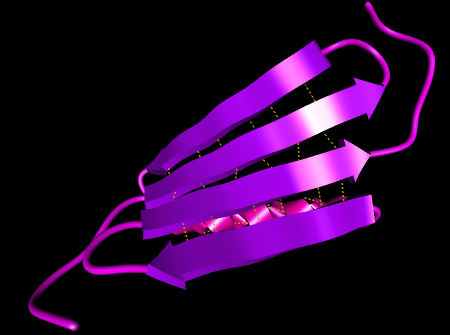
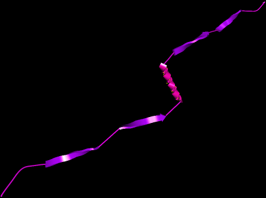

Protein Creation
In ProteinShop, a protein is created by reading or loading an input file. The
current version supports two different input file formats: protein
files in PDB format, and prediction files in FASTA format.
A PDB file can be read to create a protein according
to an already existing structure. ProteinShop will create a protein
model by creating an atom for each read ATOM line, by setting that new
atom's position to the 3D cartesian coordinates read from the line, and
by creating bonds with all existing atoms that are close enough. The
chain of amino acid residues will be created according to the residue
type abbreviations given for each atom. ProteinShop uses STRIDE [see ref. below] to determine the secondary structure given the protein 3D coordinates. ProteinShop will assign structure types to each residue, and will therefore create a secondary structure chain.
|  |
| Figure 1: Protein created by loading example PDB file. |
Note: Frishman, D. and Argos, P. (1995) "Knowledge-based secondary structure assignment". Proteins: structure, function and genetics, 23, 566-579. Also for more information about STRIDE go to
http://www.embl-heidelberg.de/argos/stride/stride_info.html.
A FASTA prediction file can be read to create
a protein "from scratch." When reading a prediction file, ProteinShop
creates an amino acid residue chain according to the residue type
identifiers provided in the file, and a secondary structure chain
according to the secondary structure type predictions provided for each
residue. Currently, ProteinShop ignores the prediction confidence
values.
To create a protein graph and to assign 3D
cartesian coordinates to all created atoms, ProteinShop "simulates" the
work of a ribosome. It creates an organic molecule by processing the
provided residue type string one residue at a time. ProteinShop has a
set of residue template files, one for each residue type, that contain
atom positions to build an instance of a residue type in a local
coordinate system. While concatenating residues, ProteinShop keeps
track of an "end-of-chain transformation" which defines how to
translate local coordinates to protein coordinates. When adding a
residue to the current partial protein, the new residue's dihedral
angles are set according to the new residue's secondary structure
prediction, and the end-of-chain transformation is updated to point to
the end of the elongated chain. This process is repeated until all
residues are processed. As a result, ProteinShop will create a protein
with secondary structures fully formed and intact, but no regard for
tertiary structure. Here is a FASTA prediction file for the same
protein structure contained in the above PDB file:
Conf: 9999999999999999999999999999999999999999999999999999999999999999999999
Pred: CCCCCCEEEEEEEECCCCEEEEEEECCCHHHHHHHHHHHHHHCCCEEEEEEECCCCEEEEEEECCCCCCC
AA: ELTPAVTTYKLVINGKTLKGETTTKAVDAETAEKAFKQYANDNGVDGVWTYDDATKTFTVTEMVTEVPVA
The result of loading this prediction file
can be seen in Figure 2.
|  |
| Figure 2: Protein created by loading a FASTA
prediction file describing a protein identical to the one
described by the PDB file used in Figure 1. |